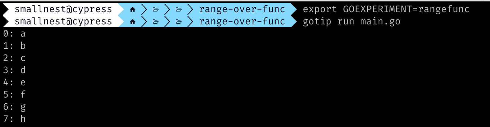
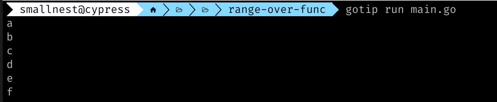

Go 1.22中可以 range 一个整数，比如下面的代码：
|
|
这个大家都已经知道了，其实对应的提案中还有一个隐藏的功能，就是可以 range 一个函数，比如下面的代码(摘自官方代码库internal/trace/v2/event.go)：
|
|
就少有介绍了。
本文尝试介绍它，让读者先了解一下，它在Go 1.22 中是一个实验性的功能，还不确定未来在哪个版本中会被正式支持。
官方wiki中也有一篇介绍: Rangefunc Experiment，类似问答的形式，也是必读的知识库。
这个功能去年Russ Cox发起讨论(#56413), 并建立一个提案(#61405),大家讨论都很激烈啊，几百次的讨论，所以我也不准备介绍前因后果了，直接了当的说结论。
先前, for-range所能遍历(迭代)的类型很有限，只能是slice、数组、map、字符串、channel等。
现在，除了上面的五种类型，还可以是整数和三种三种函数。
当然for x := range n { ... }等价于for x := T(0); x < n; x++ { ... }, 其中T是n的类型。这个大家都知道了。
三个函数可能大家不是很了解，很正常，目前这只是一个实验性的功能。当然range的类型如下：
| Range 表达式 | 第一个值 | 第二个值 |
|---|---|---|
| array or slice a [n]E, *[n]E, or []E | index i int | a[i] E |
| string s string type | index i int | see below rune |
| map m map[K]V | key k K | m[k] V |
| channel c chan E, <-chan E | element e E | |
| integer n integer type | index i int | |
| function, 0 values f func(func()bool) bool | ||
| function, 1 value f func(func(V)bool) bool | value v V | |
| function, 2 values f func(func(K, V)bool) bool | key k K | v V |
本文介绍的就是后三种形式
三种可遍历的函数
假设f是一个这样的函数:func(func()bool) bool, 那么for x := range f { ... }类似于f(func(x T1, y T2) bool { ... })，其中for循环移动到方法体中了。yield的bool返回值指示是否还要继续遍历。
对于这样一个f,下面的格式都可以:
|
|
下面是一个例子：
|
|
运行可以看到结果符合预期，我们遍历了26个小写字母，注意range的数据类型是我们的函数:

这里，fn这个函数没有返回值，其实也可以有bool返回值，有bool返回值就可以组合多个range函数，可以容易写出复杂且难以维护的代码，减少自己失业的可能。
这里的yield函数接收两个参数，第一个是int类型，第二个是byte类型，返回值是bool类型，这个yield函数的返回值决定了是否继续遍历。当然这里我们可以写泛型的程序，这里为了简单，就不写了。
下面是一个f是func(func(V)bool) bool的例子：
|
|

当然yield函数也可以没有参数，比如func(func()bool) bool，下面这个例子就是无参数的形式，输出结果是26。
|
|
如果不使用for-range 函数的形式，我们可以进行改写，比如两个参数的列子：
|
|
注意yield参数名称不是一个关键字，它只是一个普通的参数名称，可以随便取名字，但是为了模仿和其它语言中的generator,使用了yield这样一个名称，以至于代码更加易读。
看起来这个功能就是一个语法糖， 代码rangefunc/rewrite将range-over-func代码写成非range-over-func代码的形式。
为什么要这样做？
标准库中就有 archive/tar.Reader.Next, bufio.Reader.ReadByte, bufio.Scanner.Scan, container/ring.Ring.Do, database/sql.Rows, expvar.Do, flag.Visit, go/token.FileSet.Iterate, path/filepath.Walk, go/token.FileSet.Iterate, runtime.Frames.Next 和sync.Map.Range等各种遍历的函数，所以如果有一种统一的格式更好。
第三方库中有更多的类似代码。
虽然这个功能还没有正式支持，但是我看到有些库摩拳擦掌准备使用了，而sqlrange更进一步，已经支持了。
当然你使用它必须下载Go 1.22或者gotip, 并且设置export GOEXPERIMENT=rangefunc。
它提供了Query和Exec可遍历函数。比如Query从一个表中查询Point数据：
|
|
遍历查询和ORM一气呵成。这里的资源管理是自动的,底层的*sql.Rows遍历完会自动关闭。